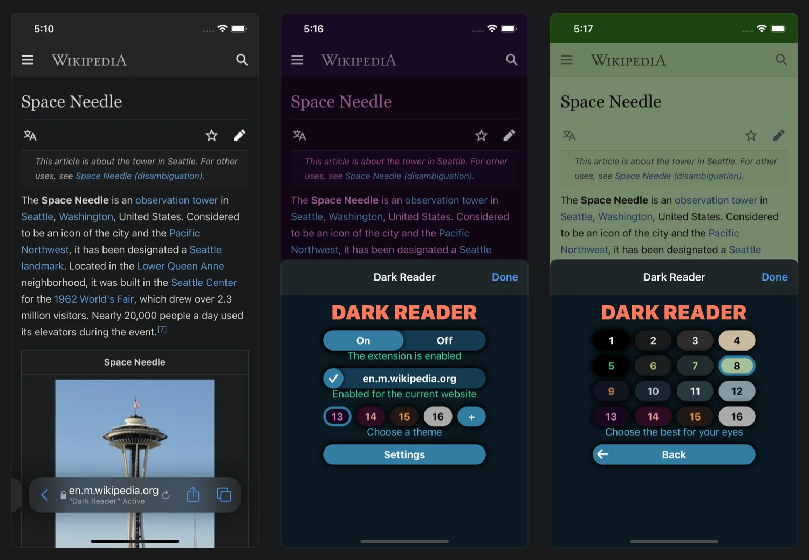

This version of Dark Reader works in all Apple devices (iPhone, iPad) that support iOS 15 or iPadOS 15. Install Dark Reader for iOS and iPadOS.
By purchasing this app you get dark mode for safari browser in all platforms (macOS, iOS, iPadOS). If you purchased the Mac app before, you don't have to pay again. Due to an App Store bug you will see a price for the iOS app. Simply proceed with the payment and you will see a message saying that you have already paid. Ensure you are using the same account. Enjoy!
Very soon the macOS version of Dark Reader for Safari will be updated for work in more stable and performant Safari Web Extensions platform. The app will get new design and features. Due to technical differences of new and old platforms your settings will not be transferred, sorry.
We don't know if we still have macOS 10.13 High Sierra users. Please let us know if you cannot upgrade to a newer version of macOS. We will find ways to make Dark Reader work for you.
For any questions and bug reports in iOS and iPadOS please e-mail to support@darkreader.org